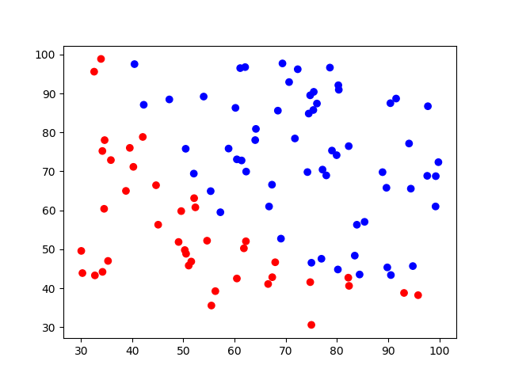
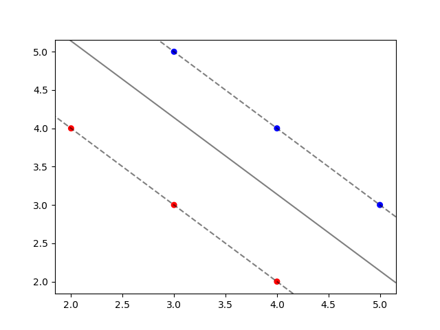
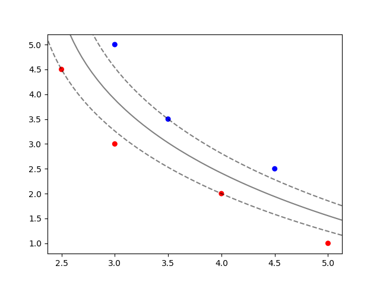
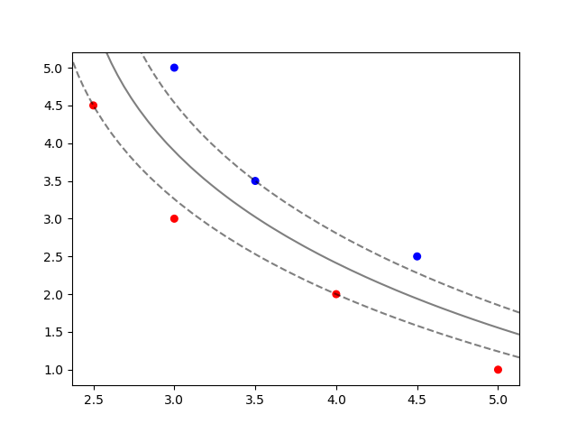

The goal of this tutorial is to implement SVM from scratch while explaining it.
I highly recommend the reader to firstly watch lectures which are given by Andrew Ng and Patrick Winston. While Andrew Ng provides very good intution, Patrick Winston shows the beauty of underlying matematics on SVM.
Table of ContentsIntro to SVM
SVM is one of the most popular approach in Machine Learning. Almost every AI book contains a chapter for SVM. There are many reasons why SVM is so important. Following properties of SVM are important ones.
- SVM construct a maximum margin classifier, which finds a decision boundary with the largest distance to training instances. A classifier with the largest distance to training instances generalize well. According to VC Analysis, large margins imply smaller VC Dimension, smaller Growth function. Since SVM construct a maximum margin classifiert, it generalizes well, short expalanation by Professor Yaser Abu-Mostafa.
- For finding model parameter, Kernel Trick can be used. Kernel Trick is nothing but simply mapping the data into a higher-dimensional space without knowing the mapping. SVM finds a decision boundary which maximizes the margin on any dataset, provided that data is linearly separable. Thank to Kernel Trick, dataset which is not linearly separable in the original input space are easily separable in the higher-dimensional space. The high-dimensional linear separator is actually nonlinear in the original space while being linear in induced/high-dimensional space. In fact, Vapnik had to wait 30 years to use idea of Kernel function in SVM. The beautiful story underlies in SVM and Kernel machines is explained by great lecturer Patrick Winston, source.
- Finding a model parameter is CONVEX optimization problem as apposed to many other algorithms, such as Neural Networks.
Consider the two plots in below. In the left image, there are five different decision boundary which perfectly classify all training instances. From the perceptive of loss function, there is nothing to worry, right?! However intutively, some examples are very close to the decision boundary. If one ponders on datagenerating process, this closeness is worring.
SVM adress this issue of closeness to decision boundary; find a parametrization/decision boundary which correctly classfies all training points while keeping the margin as large as possible. More specifically, Instead of minimizing expected empirical loss on the training data, SVM attempts to minimize expected generalization loss. We don’t know where the as-yet-unseen points may fall, but under the probabilistic assumption that they are drawn from the same distribution as the previously seen examples, there are some arguments from computational learning theory suggesting that we minimize generalization loss by choosing the separator that is farthest away from the examples we have seen so far.


Visualize SVM
 
 
